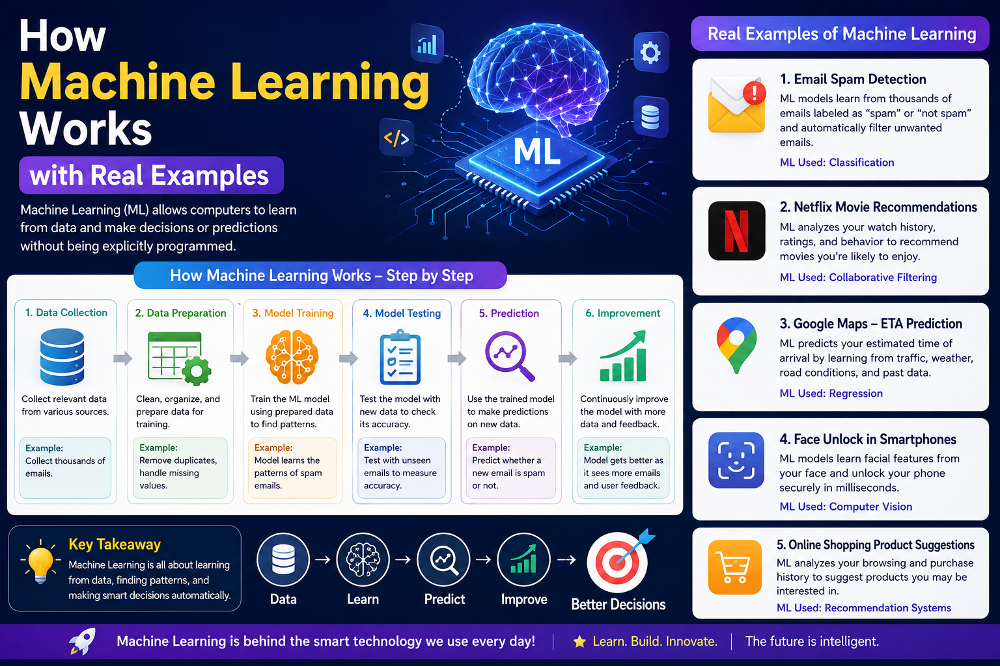

Author: Anil Lama | Published: July 2026

Every time you unlock your phone with your face, scroll through personalized video recommendations on YouTube, or receive a text message warning you about a suspicious credit card transaction, you are interacting with Machine Learning (ML).
At its core, Machine Learning is a branch of Artificial Intelligence (AI) focused on building computer systems that learn from experience rather than following explicitly programmed instructions. Instead of a human software developer writing millions of rigid if/else code conditions for every scenario, a machine learning algorithm is fed vast amounts of data. The system analyzes that data, discovers underlying patterns, and builds a mathematical model to make accurate predictions on brand-new, unseen information.
Think of machine learning like teaching a young child to identify a cat. You don't hand the child an encyclopedia detailing precise ear lengths and mustache angle measurements. Instead, you show them dozens of pictures of cats and say, "This is a cat." Over time, the child's brain automatically extracts the defining visual characteristics of a cat. Machine learning operates on this exact pattern-recognition principle.
To truly understand how machine learning works, it helps to contrast it directly with traditional software development.
In standard programming, a software engineer inputs two things: Data and Explicit Rules (Code). The computer processes the rules against the data and produces an Output. For instance, in a simple tax calculator app, the developer writes a fixed rule: If income > $50,000, apply 20% tax rate.
In Machine Learning, this dynamic is flipped on its head. You input Data and the desired Answers (Outputs) into the algorithm. The computer processes both and automatically creates the mathematical Rules (Model) that connect the data to the correct answers.
| Feature | Traditional Programming | Machine Learning |
|---|---|---|
| Core Input | Data + Explicit Hand-Written Rules | Data + Historical Outcomes/Outputs |
| Primary Output | Calculated Results | Rules, Patterns, and Predictive Models |
| Handling Complexity | Fails on complex, unpredictable problems (e.g., speech recognition). | Excels at identifying subtle patterns in messy, unstructured data. |
| Adaptability | Requires manual code updates whenever rules or environments change. | Automatically improves accuracy when fed new training data. |
| Best Use Case | Calculators, accounting software, inventory databases. | Fraud detection, self-driving cars, image recognition, natural language processing. |
Building a functioning machine learning system follows a structured pipeline. Whether an engineer is building an AI image generator or a stock market forecasting tool, the underlying process involves five critical steps:
Data is the fuel for machine learning. In this stage, developers gather raw data from databases, sensor logs, or web scraping. The data is then cleaned by removing duplicates, handling missing values, and formatting text or numbers into standardized numerical matrices that algorithms can digest.
Features are the individual measurable properties or characteristics of the data being analyzed. For example, if you are predicting house prices, features might include square footage, number of bedrooms, location zip code, and year built. Choosing the right features directly impacts model performance.
This is where the actual "learning" happens. The cleaned dataset is split into two parts: a Training Set (usually 80%) and a Testing Set (usually 20%). The algorithm analyzes the training set, makes initial guesses, measures how far off its guesses were from the actual answers (using a Loss Function), and adjusts its internal weights repeatedly until predictions become accurate.
Once training is complete, the model is tested against the reserved 20% Testing Set—data it has never seen before. This step confirms whether the model truly learned general patterns or simply memorized the training data (a common issue known as overfitting).
After validation, the model is deployed into a live production server. As real users interact with the app, the model receives new inputs, makes real-time predictions (called inference), and continues to log new data to retrain and improve over time.
Machine learning algorithms are categorized into three primary learning paradigms based on how they receive feedback during training:
In Supervised Learning, the algorithm is trained on a labeled dataset, meaning every piece of input data comes with the correct target answer. The algorithm makes predictions and is continuously corrected whenever it makes a mistake until its error rate drops near zero.
In Unsupervised Learning, the training dataset contains **no labels or correct answers**. The algorithm's job is to analyze raw, unstructured data and discover hidden groupings, clusters, or structural anomalies on its own without human guidance.
Reinforcement Learning operates through a trial-and-error environment. An artificial intelligent **Agent** takes actions within a defined environment, receiving **Positive Rewards** for correct moves and **Negative Penalties** for mistakes. Over millions of iterations, the agent learns the optimal policy to maximize its cumulative reward.
Your email inbox uses supervised classification algorithms to evaluate incoming messages. Features like sender domain reputation, suspicious phrases ("Claim your free prize now!"), and broken links are converted into a probability score. If the probability crosses a threshold, the email bypasses your primary inbox and drops directly into the Spam folder.
Ever wondered how Netflix knows exactly what show you'll binge-watch next? Recommendation engines use a machine learning technique called Collaborative Filtering (Unsupervised Learning). The algorithm groups millions of users with similar viewing histories together. If User A and User B watched the same 10 movies, and User B just watched a new thriller, the system instantly recommends that thriller to User A.
Financial institutions process millions of transactions per second. Machine learning models analyze historical spending habits, geographical locations, purchase amounts, and transaction times in real time. If a card normally used in Kathmandu suddenly makes a high-value purchase in Europe 10 minutes later, an anomaly detection algorithm flags the transaction instantly as fraud.
When you type messages on your smartphone, Natural Language Processing (NLP) models evaluate your current word alongside your personal typing history to predict the next word you are likely to type. These models continuously adapt to your vocabulary, slang, and language choices.
Hospitals use Deep Learning models (a specialized subset of Machine Learning using artificial neural networks) to analyze X-rays, MRIs, and CT scans. Trained on millions of anonymized medical images, these models can identify early-stage tumors, bone fractures, or retinal damage with accuracy rates rivaling experienced radiologists.
Finding the right balance during model training is critical:
When machine learning tasks involve incredibly complex unstructured data—such as recognizing faces, translating spoken audio, or generating text—standard algorithms reach a limit. **Deep Learning** uses multi-layered structure nodes called Artificial Neural Networks inspired by the biological structure of the human brain to process data in hierarchical abstractions.
Despite its revolutionary impact, machine learning is not a magic cure-all solution. Key challenges include:
You don't need a PhD in Mathematics to start building basic machine learning projects. Here is a practical roadmap for beginners:
Pandas & NumPy for data manipulation and cleaning.Scikit-Learn for standard supervised and unsupervised algorithms.PyTorch or TensorFlow for deep learning and neural networks.Machine Learning is transforming how modern technology solves complex real-world problems. By shifting the paradigm from writing static hand-crafted rules to training mathematical models on rich datasets, ML powers everything from smartphone conveniences to life-saving medical breakthroughs.
Whether you are a student, developer, or curious tech enthusiast, understanding the fundamentals of data preprocessing, algorithmic training, and model evaluation provides a strong foundation to thrive in an increasingly automated world.
Is Machine Learning the same as Artificial Intelligence?
No. Artificial Intelligence is the broad umbrella concept of creating machines capable of intelligent human-like behavior. Machine Learning is a specific subfield of AI that uses data-driven algorithms to achieve that intelligence.
Do I need to know advanced coding to learn Machine Learning?
Basic to intermediate Python programming skills are recommended. However, modern no-code and low-code platforms allow non-programmers to experiment with basic ML model building using visual interfaces.
Which programming language is best for Machine Learning?
Python is the industry standard due to its unmatched ecosystem of libraries like Scikit-Learn, PyTorch, and TensorFlow. R and C++ are also used in specific statistics and high-performance game engineering contexts.
What is the difference between Machine Learning and Deep Learning?
Deep Learning is a specialized subfield of Machine Learning that uses multi-layered artificial neural networks to process complex unstructured data like images, audio, and natural language text.
Can Machine Learning models make mistakes?
Yes. Machine learning models make probabilistic predictions based on past data. If they encounter uncharacteristic edge cases, low-quality data, or biased training examples, they can produce false positives or incorrect outputs.
© 2026 Anil Lama • anillama.com.np